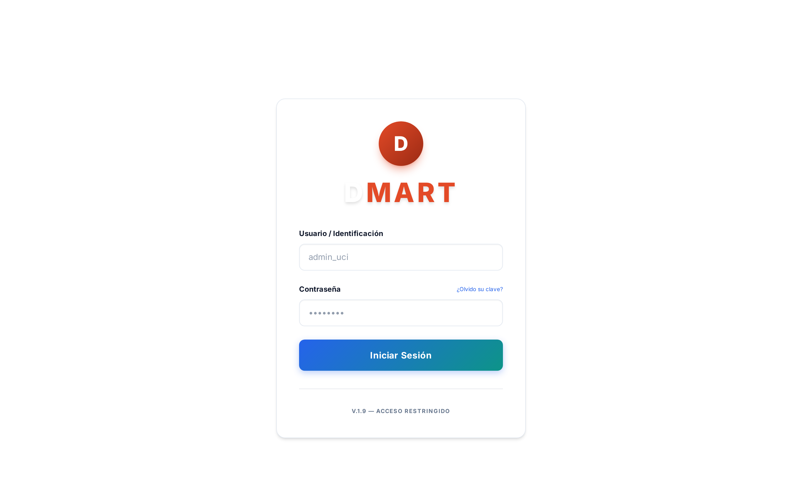
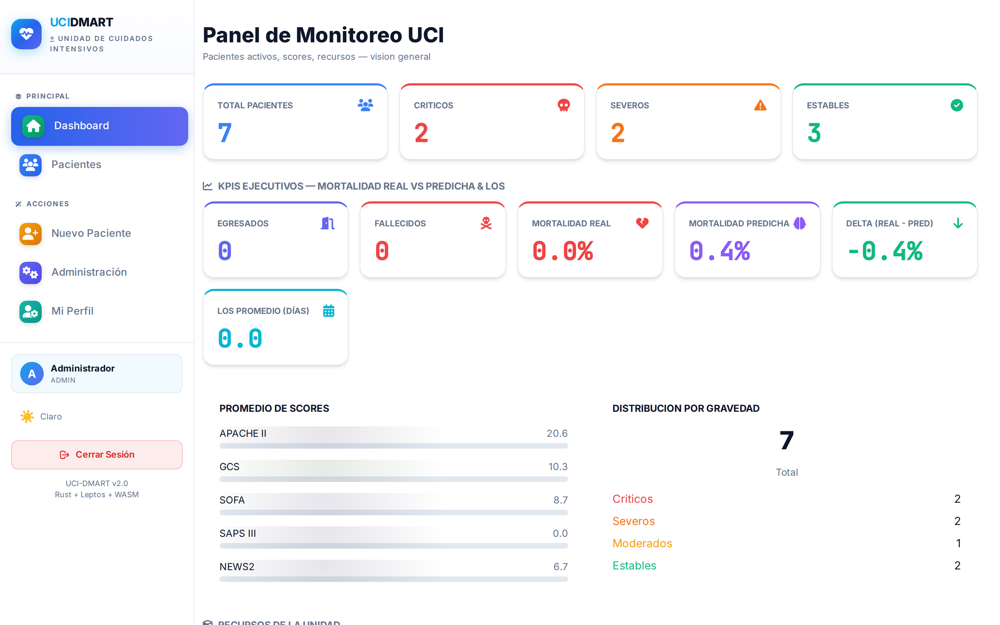
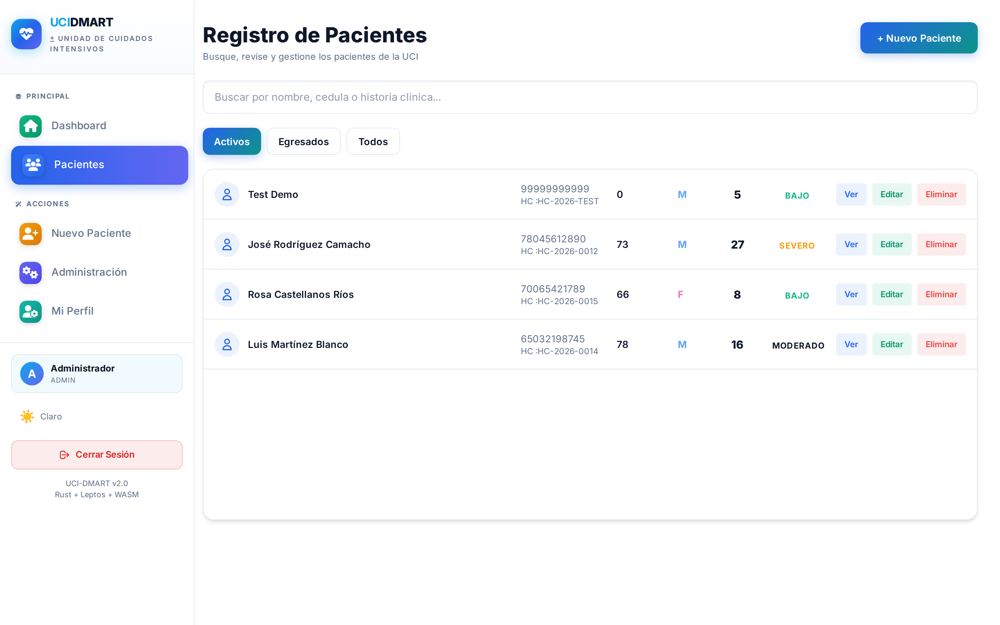
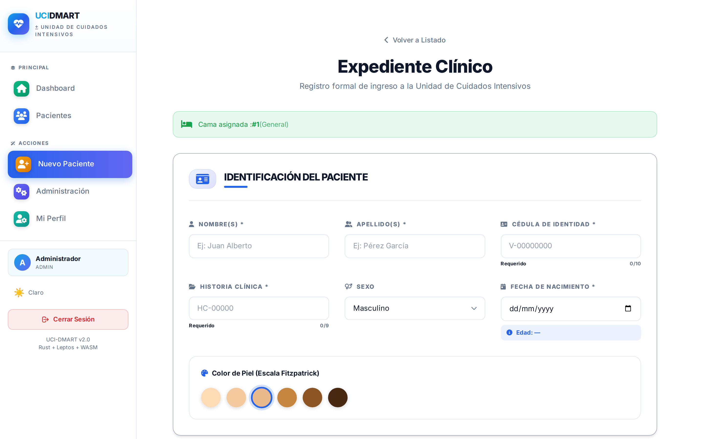
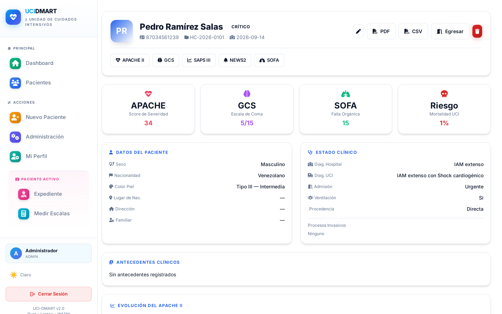
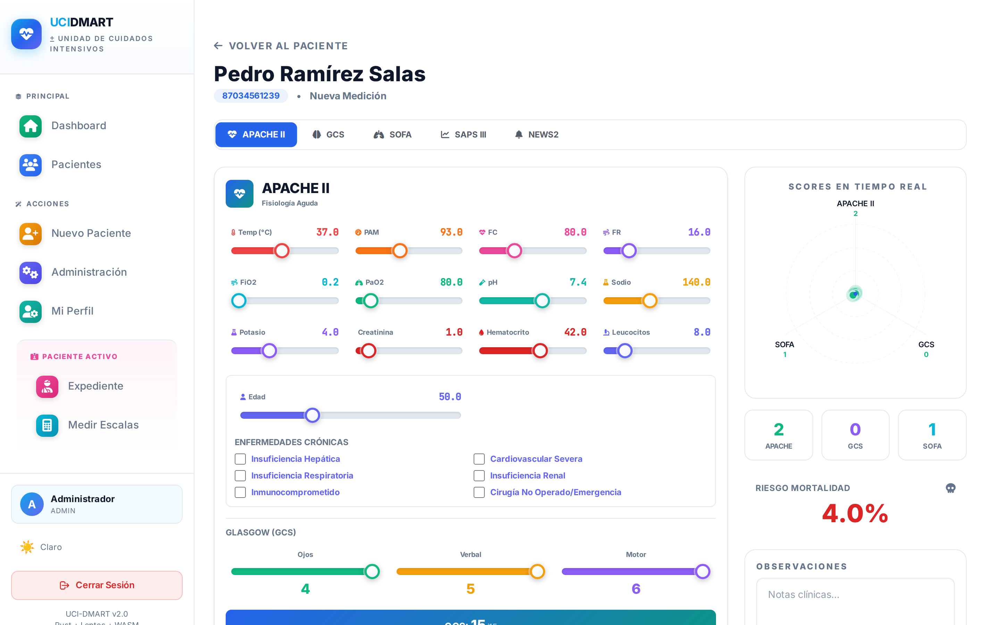
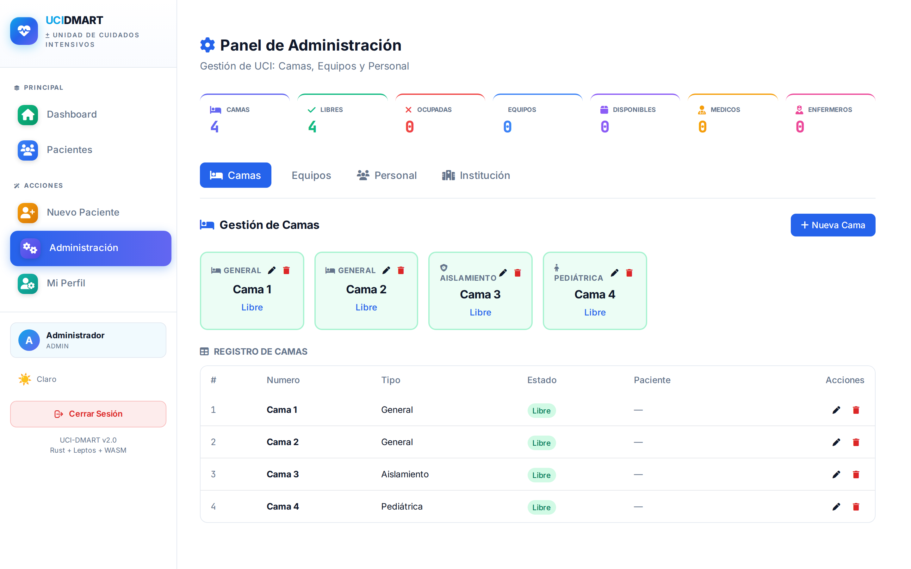

Diseño, robustez, seguridad, análisis de sensibilidad y validación técnica de una plataforma integral para UCI: 152 tests verificados, 35 especificaciones SDD, MFA + RBAC + cifrado ChaCha20-Poly1305, compliance HIPAA/ISO 27001 y arranque en menos de 140 ms.
En el ámbito crítico de la medicina intensiva, donde cada decisión puede ser determinante para la vida de los pacientes, la precisión del índice de gravedad APACHE II (Acute Physiology and Chronic Health Evaluation II) emerge como un pilar fundamental para la estratificación del riesgo y la distribución eficiente de recursos en las Unidades de Cuidados Intensivos (UCI). Este índice, complementado por la Escala de Coma de Glasgow (GCS), el National Early Warning Score 2 (NEWS2), el Sequential Organ Failure Assessment (SOFA) y el Simplified Acute Physiology Score III (SAPS III), constituye el marco de referencia estándar para evaluar la gravedad de pacientes críticamente enfermos (Knaus et al., 1985; Teasdale & Jennett, 1974).
El presente informe técnico describe el diseño, la implementación, la validación y la operación de dMart UCI, una plataforma integral de gestión para UCI construida íntegramente en el lenguaje de programación Rust (edition 2024, toolchain 1.98) y compilada a WebAssembly mediante el framework reactivo Leptos 0.8. El sistema se despliega como un único binario de producción (18,2 MiB) que integra una API REST de alto rendimiento sobre Axum 0.8, una base de datos embebida transaccional (SurrealDB sobre SurrealKV), un motor de parseo HL7 v2.4 con transporte MLLP/MQTT, interoperabilidad nativa FHIR R4, un pipeline de Server-Sent Events (SSE) para monitoreo en tiempo real y un frontend PWA offline-first con Service Worker.
El desarrollo se gestionó mediante la metodología Spec-Driven Development (SDD), con 35
especificaciones (SPEC-001 a SPEC-035) distribuidas en 10 fases acumulativas (0–9), criterios de aceptación en
formato Gherkin y gates de calidad automatizados (cargo fmt, cargo clippy -D warnings,
cargo audit, promtool test rules, cobertura ≥ 60 %). La verificación del sistema
se realizó mediante 152 tests del backend (85 unitarios de librería, 35 E2E de API y 32 de
integración HL7/MLLP), pruebas de conformidad clínica con 13 vectores de referencia (7 APACHE II y 6 GCS),
66 property-based tests (proptests) y 4 «targets» de fuzzing. Los resultados muestran un tiempo de arranque
inferior a 140 ms, latencias de observabilidad submilisegundo (mediana 0,26–1,13 ms) y una tasa de
procesamiento superior a 880 req/s incluso en el «endpoint» más pesado (/obs/metrics).
La arquitectura de seguridad incluye autenticación con Argon2id (19 MiB, 3 pasadas,
4 carriles), JWT con tokens de acceso de 15 minutos y «refresh tokens» rotativos de uso único (7 días),
autenticación de dos factores MFA TOTP (RFC 6238) con detección de reuso y revocación
por familia de sesiones, autorización por roles (RBAC) granular (Admin, Médico, Enfermero,
Viewer) con matriz resource:action por ruta, cifrado autenticado ChaCha20-Poly1305,
zeroización de secretos en memoria, auditoría PHI inmutable con retención de 6 años, «rate limiting» basado en
«token bucket» por IP real y endurecimiento contra inyección, XSS y DoS. El paquete de compliance (SPEC-034) mapea
controles a HIPAA 45 CFR 164, NIST 800-53 e
ISO 27001 Anexo A. El informe incluye un modelo de amenazas con 15 ataques identificados
y sus respectivas defensas, un análisis de sensibilidad clínica y técnica que evidencia el rigor
del diseño del sistema.
Palabras clave: RustAPACHE IIGlasgow Coma Scale UCIWebAssemblyLeptos AxumSurrealDBHL7 FHIR R4Spec-Driven DevelopmentMFA RBACHIPAA
In the critical field of intensive medicine, where each decision may be decisive for patients' lives, the accuracy of the APACHE II severity index emerges as a fundamental pillar for risk stratification and efficient resource allocation in Intensive Care Units (ICU). This index, complemented by the Glasgow Coma Scale (GCS), the National Early Warning Score 2 (NEWS2), the Sequential Organ Failure Assessment (SOFA), and the Simplified Acute Physiology Score III (SAPS III), constitutes the standard reference framework for evaluating the severity of critically ill patients.
This technical report describes the design, implementation, validation, and operation of dMart UCI, a comprehensive ICU management platform built entirely in the Rust programming language (edition 2024, toolchain 1.98) and compiled to WebAssembly using the Leptos 0.8 reactive framework. The system deploys as a single production binary (18.2 MiB) integrating a high-performance REST API on Axum 0.8, an embedded transactional database (SurrealDB on SurrealKV), an HL7 v2.4 parser with MLLP/MQTT transport, native FHIR R4 interoperability, a Server-Sent Events (SSE) pipeline for real-time monitoring, and an offline-first PWA frontend with Service Worker.
Development followed the Spec-Driven Development (SDD) methodology with 35 specifications (SPEC-001 through SPEC-035) across 10 cumulative phases (0–9), Gherkin-format acceptance criteria, and automated quality gates. System verification comprised 152 backend tests (85 library unit tests, 35 API E2E tests, and 32 HL7/MLLP integration tests), clinical conformance testing with 13 reference vectors, 66 property-based tests, and 4 fuzzing targets. Results demonstrate startup under 140 ms, sub-millisecond observability latencies (median 0.26–1.13 ms), and throughput exceeding 880 req/s on the heaviest endpoint.
The security architecture includes Argon2id password hashing (19 MiB, 3 passes, 4 lanes), JWT with 15-minute access tokens and single-use rotating refresh tokens (7 days), MFA TOTP (RFC 6238) with reuse detection and family-wide revocation, granular RBAC with resource:action permission matrices, authenticated ChaCha20-Poly1305 encryption, memory zeroization, immutable PHI audit logging with 6-year retention, real-IP-based token-bucket rate limiting, and hardening against injection, XSS, and DoS attacks. The compliance pack (SPEC-034) maps controls to HIPAA 45 CFR 164, NIST 800-53, and ISO 27001 Annex A. The report includes a comprehensive threat model with 15 attacks and corresponding defenses, clinical and technical sensitivity analysis demonstrating the design rigor.
Keywords: RustAPACHE IIGlasgow Coma Scale ICUWebAssemblyLeptos AxumSurrealDBHL7 FHIR R4SDDMFA RBACHIPAA
En el dinámico y desafiante entorno de la medicina intensiva, donde cada instante es crítico y cada decisión puede significar la diferencia entre la vida y la muerte, la precisión y la eficiencia son imperativas. Las Unidades de Cuidados Intensivos (UCI) se constituyen en refugios de esperanza donde la innovación tecnológica y los conocimientos médicos convergen para salvaguardar la salud y el bienestar de los pacientes más vulnerables (Chávez, 2012). Estudios previos han demostrado que los pacientes con estancia prolongada consumen hasta el 50 % de los recursos hospitalarios de la UCI, con una mortalidad elevada (Velásquez & Sánchez, 2002), y que el análisis de las variables fisiológicas en tiempo real resulta decisivo para la toma de decisiones médicas (Chávez, 2012).
El índice APACHE II, desarrollado por Knaus y colaboradores en 1985, ofrece un sistema estandarizado para evaluar la gravedad de la enfermedad y predecir la mortalidad en pacientes ingresados en UCI (Knaus et al., 1985). Complementariamente, la Escala de Coma de Glasgow (GCS), desarrollada por Teasdale y Jennett en 1974, proporciona una herramienta objetiva y rápida para evaluar el nivel de conciencia, particularmente vital para la detección temprana de deterioro neurológico (Teasdale & Jennett, 1974). Martínez y colaboradores (2020) confirmaron, mediante un estudio con 68 pacientes, que el APACHE II es una herramienta sumamente útil para el médico de la UCI en la estratificación inicial de la severidad clínica.
Sin embargo, la evaluación manual del APACHE II y de la GCS resulta lenta y propensa a errores, consume recursos valiosos del personal médico y retrasa decisiones críticas. En el contexto del Hospital Universitario Antonio Patricio de Alcalá (HUAPA) de Cumaná, estado Sucre, los procesos llevados en papel han demostrado ser poco fiables e inseguros, tal como fue documentado por Angulo (2019), quien propuso un Agente Inteligente basado en Redes Neuronales Artificiales para la identificación de determinantes de estancia en la UCI de dicha institución, empleando en aquel momento la metodología OpenUP y tecnología Python.
El presente trabajo describe la implementación de dMart UCI, una plataforma integral de gestión para UCI que automatiza el cálculo del APACHE II, la GCS, NEWS2, SOFA y SAPS III, y que ofrece capacidades avanzadas de monitoreo en tiempo real, interoperabilidad con monitores de cama vía HL7 v2.4 y FHIR R4, analítica de mortalidad asistida por ML y un frontend PWA accesible desde cualquier dispositivo con navegador moderno. Los objetivos específicos de esta investigación son:
La metodología empleada es Spec-Driven Development (SDD): la naturaleza del dominio médico exige contratos formales verificables (especificaciones en formato Gherkin) y criterios de aceptación medibles antes de considerar terminada una funcionalidad. Este enfoque se documenta en la Sección 4.
El APACHE II fue introducido por Knaus, Draper, Wagner y Zimmerman (1985) como un sistema de clasificación de la severidad de la enfermedad para pacientes en UCI. Se compone de tres componentes: la puntuación de fisiología aguda (APS), la puntuación por edad y la puntuación por enfermedades crónicas.
El APS evalúa 12 variables fisiológicas, cada una puntuada de 0 a 4 puntos según su desviación respecto de los rangos de referencia. La suma de las puntuaciones constituye el componente APS (rango 0–60). Las variables y sus rangos de puntuación son:
| Variable | Unidad | Rangos y puntuación (0–4 pts) |
|---|---|---|
| Temperatura rectal | °C | 36,0–38,4 → 0; 34,0–35,9 / 38,5–38,9 → 1; 32,0–33,9 / 39,0–40,9 → 2; 30,0–31,9 / ≥41,0 → 3; ≤29,9 → 4 |
| Presión arterial media | mmHg | 70–109 → 0; 50–69 / 110–129 → 2; 130–159 → 3; ≥160 → 4; <49 → 4 |
| Frecuencia cardíaca | lpm | 70–109 → 0; 40–69 / 110–139 → 2; 140–179 → 3; ≥180 → 4; <39 → 4 |
| Frecuencia respiratoria | rpm | 12–24 → 0; 10–11 / 25–34 → 1; 6–9 / 35–49 → 2; ≥50 → 4; <5 → 4 |
| Oxigenación | — | FiO₂ ≥ 0,5: A-aDO₂ <100 → 0; 100–249 → 2; 250–349 → 3; ≥350 → 4 · FiO₂ < 0,5: PaO₂ >70 → 0; 61–70 → 1; 55–60 → 2; <55 → 4 |
| pH arterial | — | 7,33–7,49 → 0; 7,25–7,32 / 7,50–7,59 → 2; 7,15–7,24 / 7,60–7,69 → 3; <7,15 / ≥7,70 → 4 |
| Sodio sérico | mEq/L | 130–149 → 0; 120–129 / 150–154 → 2; 111–119 / 155–159 → 3; ≤110 / ≥160 → 4 |
| Potasio sérico | mEq/L | 3,5–5,4 → 0; 3,0–3,4 / 5,5–5,9 → 1; 2,5–2,9 / 6,0–6,9 → 3; <2,5 / ≥7 → 4 |
| Creatinina | mg/dL | 0,6–1,4 → 0; <0,6 → 2; 1,5–1,9 → 3; ≥3 → 4 (×2 en fallo renal agudo) |
| Hematocrito | % | 30,0–45,9 → 0; 20,0–29,9 / 46,0–49,9 → 1; <20 / ≥50 → 4 |
| Leucocitos | ×10³/mm³ | 3,0–14,9 → 0; 1,0–2,9 / 15,0–19,9 → 1; <1 / ≥20 → 2; — → 4 |
| GCS | 3–15 | Conversión: 15 − GCS → 0–12 pts |
| Edad (años) | Pts | Condición crónica | Pts |
|---|---|---|---|
| ≤ 44 | 0 | Insuficiencia hepática (cirrosis, hipertensión portal, sangrado variceal) | 5 |
| 45–54 | 2 | Cardiovascular severa (ICC clase IV NYHA, angina inestable) | 5 |
| 55–64 | 3 | Respiratoria severa (EPOC restrictivo, dependencia de VM) | 5 |
| 65–74 | 5 | Renal crónica (diálisis) | 5 |
| ≥ 75 | 6 | Inmunocompromiso (quimio/radioterapia, transplante, SIDA) · cirugía de emergencia | 5 |
La puntuación total del APACHE II se calcula como APACHE II = APS + Edad + Crónicas, con rango 0–71. La mortalidad hospitalaria estimada se obtiene mediante la fórmula logística original de Knaus et al. (1985):
donde R es el riesgo de mortalidad hospitalaria. En dMart UCI, la conversión se implementa en la función
apache_mortality() del módulo scales.rs de la librería dmart-shared, como
función pura y determinista.
| Puntuación APACHE II | Mortalidad estimada | Nivel de severidad | Color UI |
|---|---|---|---|
| 0–9 | < 10 % | Bajo | Verde esmeralda |
| 10–19 | 10–25 % | Moderado | Azul |
| 20–29 | 25–50 % | Severo | Ámbar |
| ≥ 30 | > 50 % | Crítico | Rojo rose |
La GCS evalúa tres componentes —respuesta ocular (E: 1–4), verbal (V: 1–5) y motora (M: 1–6)— con una puntuación total de 3 a 15 puntos (Teasdale & Jennett, 1974). En dMart UCI se clasifica mediante grados de trauma craneoencefálico: TCE leve (13–15), TCE moderado (9–12) y TCE severo o coma (3–8), y aporta hasta 12 puntos al componente APS del APACHE II mediante la conversión 15 − GCS.
| Tecnología | Rol en el sistema |
|---|---|
| Rust 1.98 · edition 2024 | Lenguaje de sistemas con seguridad de memoria garantizada en compilación (ownership/borrowing), cero costos de abstracción. |
| Leptos 0.8 → WebAssembly | Framework reactivo que compila el frontend SPA a WASM (2,53 MB) con reactividad fine-grained. |
| Axum 0.8 (Tokio) | Framework HTTP con enrutado tipado, middleware Tower, SSE nativo. |
| SurrealDB / SurrealKV | Base de datos multi-modelo embebida, transaccional, con SurrealQL y migraciones versionadas. |
| HL7 v2.4 · MLLP · MQTT | Mensajería clínica ORU^R01 con drivers Mindray, Philips y genéricos. |
| FHIR R4 · LOINC · CIE-10 | Interoperabilidad: Patient, Observation, Condition, DiagnosticReport, Bundle. |
| Prometheus · Grafana | Observabilidad: 33 familias de métricas, 6 dashboards, 18 reglas de alerta. |
| Argon2id · JWT · ChaCha20-Poly1305 · zeroize | Seguridad: hashing de contraseñas, tokens revocables, cifrado autenticado y zeroización en memoria. |
| Docker · Kubernetes/Helm · ArgoCD/Flux | Despliegue reproducible, HA y GitOps. |
El sistema mapea controles a múltiples marcos normativos mediante el paquete de evidencia (SPEC-034), que
incluye un catálogo de controles (CONTROL_CATALOG.md), inventario de flujos de PHI
(DATA_FLOWS.md), registro de incidentes (INCIDENTS.md) y marco legal
(LEGAL.md), junto con scripts de generación y validación
(compliance_generate.sh / compliance_check.sh).
| Marco | Controles implementados |
|---|---|
| HIPAA 45 CFR 164 | §164.312(a) Control de acceso · §164.312(b) Auditoría (logs inmutables, retención 6 años) · §164.312(c) Integridad (fingerprint SHA-256) · §164.312(d) Autenticación (MFA) · §164.312(e) Protección en tránsito (TLS/HSTS). |
| ISO 27001:2022 | Controles organizativos (A.5), de personas (A.6), físicos (A.7), tecnológicos (A.8) y de suplidor (A.9), con evidencia auto-generada y evaluación de riesgos trimestral. |
| NIST 800-53 | Categorías AC, AU, CA, CM, IA, IR, MP, PE, RA, SC y SI mapeadas en el catálogo de controles. |
| Ley 118 de 2021 (Cuba) | Protección de datos personales: consentimiento, minimización y derechos de los titulares; tratamiento seguro de datos de salud como PHI. |
DMART_CORS_ORIGIN y DMART_TRUST_PROXY.Si bien la investigación antecedente de Angulo (2019) empleó la metodología OpenUP, el presente proyecto adoptó
Spec-Driven Development (SDD) por las siguientes razones: (a) los criterios de aceptación en
formato Gherkin son ejecutables y verificables automáticamente, eliminando la ambigüedad de las historias de usuario
informales; (b) cada SPEC exige gates de calidad obligatorios —cargo fmt,
cargo clippy -D warnings, cargo audit con cero advisories y tests unitarios/E2E de
integración— antes de marcarse como completada; (c) existe trazabilidad completa de requisito a implementación
(commits, tests y criterios go/no-go asociados); y (d) el dominio médico requiere especificaciones clínicas precisas
—vectores de referencia, fórmulas validadas y rangos fisiológicos— que exigen un contrato formal y verificable.
Cada SPEC sigue la plantilla specs/TEMPLATE.md con: contexto (problema, usuario objetivo y métrica de
éxito), criterios de aceptación Gherkin, contratos de API (endpoints, esquemas, códigos de error), modelos de datos
(tablas SurrealQL, migraciones e índices), casos límite (edge cases), estrategia de pruebas (unitarias, integración,
property-based, seguridad y fuzz), plan de rollback (feature flags, migraciones reversibles) y definición de
terminado (Definition of Done).
| Fase | Alcance | SPECs de referencia | Estado |
|---|---|---|---|
| 0 | Limpieza y cimientos | 001 · toolchain 2024 | Completada |
| 1 | Seguridad crítica | 004 (Auth/AuthZ, MFA, RBAC) | Completada |
| 2 | Arquitectura y datos | 002 (persistencia ML) | Completada |
| 3 | DevOps y observabilidad | 005 (Prometheus/Grafana) | Completada |
| 4 | Frontend y UX | PWA · temas · accesibilidad | Completada |
| 5 | Clínico y QA avanzado | 003 · 027 · 028 (conformidad) | Completada |
| 6 | Despliegue y staging | 006–009 · 012 | Completada |
| 7 | Interoperabilidad clínica | 010–020 | Completada |
| 8 | Producción y cloud | 021–026 · 029–033 | Completada |
| 9 | Compliance y coste | 034 · 035 | Completada |
| ID | Criterio | Métrica de verificación |
|---|---|---|
| R1 | 30 días de uptime sin intervención | uptime_seconds continuo en staging; reinicio automático. |
| R2 | Detecta sus propios fallos | 6 dashboards, 18 alertas, 0 falsas alarmas/semana. |
| R3 | No pierde datos clínicos | Backup diario con restauración probada (RPO ≤ 24 h, RTO < 4 h). |
| R4 | Despliegue y rollback sin drama | docker compose up reproducible; rollback < 15 min. |
| R5 | Escalas clínicamente correctas | Vectores de referencia Knaus/GCS (APACHE II + GCS validados). |
| R6 | Un monitor roto no tumba el resto | Circuit breaker; gap/fault visibles en Grafana. |
| R7 | PHI y seguridad sin sorpresas | 0 advisories; sin PHI en logs, métricas ni labels. |
| R8 | Los cambios no rompen lo existente | CI gate: tests + clippy + promtool test rules. |
Las mediciones del informe se realizaron el 17 de septiembre de 2026 sobre la rama main (commit
1d6356f): CPU Intel i5-10400 (12 hilos, ≈2,9 GHz), 11 GiB de RAM, Linux 7.2.4 (x86_64), binario
target/release/dmart-server (19.116.472 bytes, 18,2 MiB), base de datos temporal por ejecución y
puerto aislado para el benchmark.
La arquitectura es de monolito modular compilado a un único binario, donde la librería
(lib) y el binario (bin) comparten los mismos módulos. Esto simplifica el despliegue en
redes hospitalarias aisladas (un solo ejecutable, sin dependencias de runtime) y permite que el mismo código se
reutilice en los tests de integración in-process. El diseño distribuye los componentes en cuatro estratos:
cliente (PWA/WASM), núcleo del servidor, interoperabilidad (HL7/FHIR) y persistencia/observabilidad.
dmart-shared,
dmart-server y dmart-app componen el workspace Cargo.dmart/
├─ dmart-shared/ modelos · escalas clínicas · validación · ML (DecisionTree)
├─ dmart-server/ Axum API · auth/RBAC · HL7+MLLP/MQTT · FHIR R4 · auditoría
│ ├─ api/ 23 submódulos de endpoints (patients, scales, admin, fhir, …)
│ ├─ hl7/ parser ORU^R01 · framer MLLP · ingest · cliente MQTT
│ ├─ fhir_bundle/ parser Bundle R4 + conversión LOINC → VitalsMessage
│ ├─ ews_stream/ Early-Warning Streaming (NEWS2/APACHE/SOFA → SSE)
│ ├─ migrations/ SurrealQL versionado (001…033)
│ └─ fuzz/ 4 targets (json, hl7, scales, api_json)
├─ dmart-app/ frontend Leptos/WASM (PWA, Tailwind, Service Worker)
├─ specs/ 35 especificaciones SDD
├─ docs/ arquitectura · API · compliance · runbooks
└─ tests/ E2E (Playwright) · carga (k6)
Los requisitos funcionales se agrupan en casos de uso protagonizados por los cuatro roles clínicos del RBAC (Admin, Médico, Enfermero y Viewer) junto con los sistemas externos de interoperabilidad (monitores HL7 v2.4 y sistemas FHIR R4). Los actores acceden al radar de «scores», a la gestión de pacientes y al panel de estadísticas, mientras que los sistemas externos alimentan el flujo de datos clínicos mediante MLLP/MQTT.
El modelo de dominio garantiza la corrección clínica mediante el patrón de estrategia: las escalas clínicas
(ScaleEngine) se implementan como funciones puras, lo que asegura su testabilidad sin red ni base de
datos y habilita el «fingerprint» SHA-256 por medición.
El flujo de autenticación implementa MFA TOTP (RFC 6238), rotación de «refresh tokens» de un solo uso y revocación por reuso en toda la familia de sesiones, según la SPEC-004.
La robustez es un requisito fundamental en entornos hospitalarios, donde la disponibilidad del sistema puede influir directamente en la calidad de atención al paciente crítico. dMart UCI implementa las siguientes estrategias:
| Mecanismo | Descripción |
|---|---|
| Backpressure (token bucket) | Regula la tasa de mensajes de cada monitor de cama, evitando que un dispositivo defectuoso sobrecargue al sistema. |
| Circuit breaker | Máquina de estados completa (Closed → Open → HalfOpen); 3 éxitos consecutivos (success_threshold=3) para cerrar. Un monitor roto no degrada al resto de la UCI. |
| Reconexión con backoff | connect_with_retry() con backoff exponencial y jitter acotado hacia SurrealKV. |
| Health checks 3 niveles | /obs/live (proceso), /obs/ready (BD), /obs/health (reporte completo). |
| Graceful shutdown | Drenado de conexiones SSE con tiempo límite (TimeoutStopSec=20). |
| Retención y downsampling | UPSERT idempotente por bucket, keyset pagination, purga por antigüedad y guard de disco crítico (statvfs <10 %). |
| DR y clúster | RPO < 1 h / RTO < 4 h; clúster SurrealDB de 3 nodos; Blue/Green + Canary con auto-rollback; Kubernetes/Helm con PDB. |
El análisis de sensibilidad evalúa cómo varía la salida del sistema ante cambios en las variables de entrada. En dMart UCI se aborda a tres niveles: clínico (escalas), de robustez (circuit breaker y validaciones) y numérico (proptests y conformidad).
Las funciones de cálculo son puras (sin efectos colaterales, red ni base de datos). La puntuación total es monótona no decreciente respecto de cada variable fisiológica: un aumento de la gravedad siempre produce una puntuación mayor o igual (verificado por proptests). La sensibilidad de la mortalidad es exponencial en el «odds ratio»: cada punto adicional de APACHE II incrementa la mortalidad estimada un 8,3 %. La transición crítica de la curva sigmoide se ubica entre 25 y 30 puntos, donde la mortalidad supera el 50 %.
Los 7 vectores de referencia clínicos validan el comportamiento en puntos extremos del dominio. En particular, el fixture de falla multiorgánica extrema alcanza la cota superior de la escala (71 puntos), y el fixture de paciente sano obtiene 0 puntos. La suite de conformidad exige match exacto del total y de los 16 sub-«scores» del desglose.
| Entrada límite | Comportamiento verificado |
|---|---|
| FiO₂ > 1,0 | Rechazado (fracción de oxígeno solo entre 0,21 y 1,00). |
| A-aDO₂ muy alto | Warning crítico-alto (valores >500 mmHg improbables sin soporte extracorpóreo). |
| Edad > 120 años | Rechazado (límite fisiológico). |
| GCS fuera de rango (verbal/motor) | Rechazado contra rangos de Teasdale & Jennett. |
| μtrabajos arbitrarios (fuzz) | Ningún «panic»; robustez del parser HL7 y de las escalas (proptests). |
El umbral de fallo es configurable; la transición a Open ocurre al superar la tasa de fallos, y en HalfOpen se requieren exactamente 3 éxitos consecutivos para cerrar (un fallo reabre inmediatamente). La suite incluye 7 pruebas específicas de la máquina de estados; el «bug» histórico del estado HalfOpen no-op fue detectado y corregido en el marco de la SPEC-027.
La estrategia de pruebas cubre siete niveles de verificación. La ejecución del 17 de septiembre de 2026 confirmó 152/152 tests del backend en verde en aproximadamente 13,5 s:
| Nivel | Cantidad | Estado | Comando / artefacto |
|---|---|---|---|
| Tests unitarios (lib) | 85 | verificado hoy | cargo test -p dmart-server --lib (0,33 s) |
| E2E HTTP de API | 35 | verificado hoy | --test api_tests (9,26 s) |
| Integración HL7/MLLP | 32 | verificado hoy | --test hl7_integration (3,86 s) |
| Conformidad clínica | 13 | verificado | 7 vectores APACHE II + 6 GCS (match exacto) |
| Property-based testing | 66 | documentado | Monotonicidad, «bounds», robustez HL7 |
| Fuzzing | 4 targets | en repo | fuzz_hl7_parser, fuzz_scales, fuzz_api_json, fuzz_target_1 |
| E2E navegador (Playwright) | Suite | en repo | tests/e2e · login, patients, measurements, admin |
| Carga (k6) | 6 escenarios | en repo | auth, fhir, hl7, metrics, scales, run_all |
trunk build --release) y la superficie de seguridad en runtime
(/obs/health 200; /api/auth/me 401 sin token).Los gates de calidad automatizados complementan la estrategia: cargo fmt --check limpio,
cargo clippy -D warnings con 0 avisos (lib + bin), cargo audit con 0 advisories,
promtool test rules con 12 casos pasando y cobertura por módulo con umbrales ≥80–90 %
(shared/validation.rs 100 %, hl7/mllp.rs 100 %, global 65 %). La suite de
conformidad clínica detectó 3 errores aritméticos en vectores calculados a mano —demostrando el valor de la
automatización para prevenir el error humano— mientras que la implementación de scales.rs resultó
correcta en todos los casos.
El frontend es una SPA de Rust compilada a WebAssembly con Leptos 0.8 y empaquetada con Trunk. Forma parte del
binario de distribución en ./dist y opera como PWA con Service Worker para tolerar cortes de red en el
entorno hospitalario. Los artefactos medidos son: bundle WASM de 2,53 MB, JavaScript de arranque
de 55 KB y CSS compilado (Tailwind) de 52 KB. Entre las capacidades de interfaz destacan: radar de «scores»
en vivo que recalcula APACHE II, GCS y SOFA durante el arrastre de controles; «sliders» con precisión por paso
clínico (temperatura 0,1 °C, FiO₂ 0,01, pH 0,01); temas claro/oscuro con tokens de marca; accesibilidad WCAG
2.1 AA (foco visible, aria-label, contraste) y renderizado eficiente que aísla el radar en su propio
ámbito reactivo.
A continuación se presentan las pantallas principales del sistema capturadas en tiempo de ejecución (binario
release 0.1.0, servidor en 127.0.0.1:3000, frontend WASM servido por el propio binario):







Las mediciones se tomaron sobre el binario release target/release/dmart-server (19.116.472 bytes,
18,2 MiB), con arranque completado cuando /obs/health respondió HTTP 200 y base de datos temporal por
ejecución.
| Ejecución | Modo | Tiempo hasta health (ms) |
|---|---|---|
| 1 | Base de datos nueva (frío) | 122 |
| 2 | Base de datos existente | 135 |
| 3 | Base de datos existente | 136 |
| 4 | Base de datos existente | 111 |
El arranque completo se mantiene por debajo de ~140 ms incluso con la inicialización de SurrealKV, la validación de la clave maestra y el seed de datos base. La variabilidad (±20 ms) corresponde a I/O y perturbaciones del sistema operativo.
200 peticiones secuenciales por «endpoint» con cliente HTTP persistente (conexión reutilizada):
| Endpoint | Mediana | p95 | Máximo | ≈ req/s |
|---|---|---|---|---|
/obs/live | 0,27 ms | 0,80 ms | 39,1 ms | 3 700 |
/obs/health | 0,26 ms | 0,42 ms | 1,91 ms | 3 775 |
/obs/metrics | 1,13 ms | 1,55 ms | 4,19 ms | 883 |
El «endpoint» /obs/metrics serializa 33 familias de métricas y permanece muy por debajo del umbral
de referencia (p95 < 100 ms). El máximo aislado en /obs/live corresponde al primer requerimiento
de la serie (establecimiento de conexión).
| Componente | Valor |
|---|---|
| Binario release (opt-level z, LTO, strip, panic=abort) | 18,2 MiB (19,1 MB) |
| Bundle WASM del frontend | 2,53 MB |
| Base SurrealKV de demostración | ≈ 696 KB |
| Familias de métricas Prometheus | 33 |
k6 (tests/load/*.js) sobre un despliegue real con credenciales y datos representativos.dMart UCI gestiona información de salud protegida (PHI) en un entorno hospitalario, lo que lo convierte en un objetivo de alto valor. El modelo de amenazas identifica 15 vectores de ataque con sus defensas implementadas:
| # | Ataque | Descripción | Defensa implementada |
|---|---|---|---|
| 1 | Fuerza bruta en login | Intentos masivos de contraseña. | Rate limiting por IP real (token bucket, no falsificable), throttle exponencial, respuestas 429 JSON. |
| 2 | Robo de refresh token | Uso no autorizado del token de refresco. | Rotación single-use, detección de reuso → «revoke-all» de la familia, hashes SHA-256 en DB. |
| 3 | Replay de access token | Reutilización de token expirado. | Access de 15 min + blacklist JWT en Valkey con TTL (fail-open si cae). |
| 4 | Escalada de privilegios | Acceso con rol bajo a funciones de rol alto. | RBAC granular resource:action al 100 % de endpoints + gating de interfaz. |
| 5 | MFA bypass | Evitar la segunda factor. | TOTP RFC 6238 con throttle dedicado (3/5 min por IP) y middleware de ámbito «mfa». |
| 6 | Inyección SurrealQL/SQL | Manipulación de consultas. | Binds tipados, validación de entrada y transacciones atómicas. |
| 7 | XSS | Inyección de script en la interfaz. | Escape HTML en más de 20 handlers y sanitización de contenido. |
| 8 | Inyección en nombre de archivo | Manipulación de exportaciones. | Regex [A-Za-z0-9_-], eliminación de CR/LF y metacaracteres. |
| 9 | Inyección de comandos OS | Ejecución de comandos del sistema. | Sin exec/spawn; lógica 100 % en Rust nativo. |
| 10 | DoS por conexiones | Agotar recursos del servidor. | Límite SSE de 10 conexiones/IP con guard RAII; paginación acotada (MAX_PAGE_LIMIT=200). |
| 11 | DoS por payloads grandes | Mensajes HL7 excesivos. | Descarte de mensajes >1 MiB y validación estructural previa. |
| 12 | DoS por dispositivos defectuosos | Monitores con tráfico erróneo. | Circuit breaker + token bucket por fuente; métricas gap/fault. |
| 13 | Acceso no autorizado a PHI | Lectura de datos sin permiso. | RBAC + multi-tenancy (tenant_id en JWT), auditoría inmutable 6 años. |
| 14 | Exfiltración por memoria | «Dump» de memoria para claves. | Zeroización (zeroize) de tokens, claves y contraseñas en memoria. |
| 15 | MITM / intercepción | Captura de tráfico. | TLS vía Caddy, HSTS habilitable, CORS estricto (fail-closed). |
cargo audit con 0 advisories, traslado de reqwest→rustls (sin OpenSSL) y fuzzing
como capa reactiva ante entradas malformadas.El sistema consolida cinco escalas —APACHE II, GCS, NEWS2, SOFA y SAPS III— en un «radar» clínico que
proporciona una lectura unificada del estado del paciente. Cada medición registra algorithm_version y un
fingerprint SHA-256; el endpoint de auditoría recomputa y verifica la reproducibilidad médico-legal.
La clasificación de severidad del APACHE II (Sección 2.1.4) se complementa con los niveles propios de cada
escala:
| Escala | Rango | Niveles de severidad |
|---|---|---|
| APACHE II | 0–71 | Bajo (0–9) · Moderado (10–19) · Severo (20–29) · Crítico (≥30) |
| GCS | 3–15 | TCE leve (13–15) · TCE moderado (9–12) · TCE severo/coma (3–8) |
| NEWS2 | 0–20+ | Bajo (0–4) · Medio (5–6) · Alto (7–19) · Emergencia (≥20) |
| SOFA | 0–24 | Normal (0–1) · Disfunción (2–6) · Falla (7–9) · Falla multiorgánica (≥10) |
| SAPS III | 0–100+ | Estable (≤30) · Riesgo moderado (31–50) · Riesgo alto (51–70) · Crítico (>70) |
El sistema dMart UCI demuestra que es posible construir una plataforma integral de gestión para Unidades de Cuidados Intensivos que cumpla simultáneamente con los estándares de seguridad hospitalaria, las necesidades de rendimiento en tiempo real y los requisitos de interoperabilidad clínica, utilizando exclusivamente el ecosistema Rust.
En cuanto a la arquitectura de software, el diseño de monolito modular compilado a un único binario (18,2 MiB) simplifica el despliegue en redes hospitalarias aisladas, eliminando procesos externos y reduciendo la superficie de ataque. La base de datos embebida SurrealKV ofrece transaccionalidad ACID sin un proceso de base de datos separado.
En cuanto a la robustez, el sistema implementa defensa en profundidad con «backpressure», «circuit breaker» de máquina de estados completa, reconexión con «backoff» exponencial, «health checks» de tres niveles y apagado ordenado; el criterio R6 del ROADMAP —«un monitor roto no tumba el resto»— se verifica con el patrón de «circuit breaker» y métricas de huecos/fallos visibles en Grafana.
En cuanto a la seguridad informática, el modelo de amenazas documenta 15 vectores de ataque con sus defensas: Argon2id, JWT con «refresh tokens» rotativos y detección de reuso, MFA TOTP con «throttle», RBAC granular, cifrado ChaCha20-Poly1305, zeroización, auditoría PHI inmutable (6 años) y endurecimiento contra inyección, XSS y DoS. El paquete de compliance (SPEC-034) mapea controles a HIPAA, ISO 27001 y NIST 800-53.
En cuanto a la validación clínica, los 152 tests del backend verificados el 17 de septiembre de 2026 (85 lib + 35 E2E + 32 HL7) pasan sin fallos; se complementan con 66 proptests, 4 «targets» de fuzzing y 13 vectores de referencia clínica con match exacto contra Knaus et al. (1985) y Teasdale & Jennett (1974). La suite de conformidad detectó 3 errores aritméticos en vectores calculados a mano, demostrando la eficacia de la automatización para prevenir el error humano.
En cuanto al rendimiento, el arranque se mantiene por debajo de 140 ms (mínimo
111 ms), los «endpoint» de observabilidad alcanzan latencias submilisegundo (mediana 0,26–1,13 ms) y el
«endpoint» más pesado (/obs/metrics) procesa más de 880 req/s con p95 de 1,55 ms.
En cuanto a la metodología, Spec-Driven Development se consolidó como el enfoque adecuado para el dominio médico, al proporcionar contratos formales verificables, gates de calidad automatizados y trazabilidad completa de requisito a implementación. Las 35 especificaciones documentan exhaustivamente cada decisión de diseño, su justificación clínica y sus criterios de aceptación medibles.
Recomendaciones para el piloto: (1) ejecutar en «staging» los escenarios k6 y el fuzzing prolongado, registrando disponibilidad a 30 días ligada a los criterios R1–R8; (2) completar vectores clínicos con cita para NEWS2, SOFA y SAPS III; (3) fijar TLS obligatorio en despliegues externos y ejecutar el «drill» de recuperación de forma trimestral; (4) confirmar en «commit» las mejoras de interfaz y añadir pruebas de UI para los flujos de medición; y (5) re-evaluar el índice de similitud (HNSW) y el servicio ML (ONNX) al superar ~10.000 pacientes.
Angulo Peña, R. A. (2019). Agente inteligente basado en Redes Neuronales Artificiales para la identificación de los determinantes de la estadía de pacientes en la Unidad de Cuidados Intensivos del HUAPA Cumaná, estado Sucre [Trabajo Especial de Grado, Licenciatura en Informática, Universidad de Oriente, Núcleo de Sucre].
Chávez, V. (2012). Caracterización epidemiológica de la unidad de cuidados intensivos del hospital universitario de Coro «Dr. Alfredo Van Grieken». Revista de la Universidad del Zulia, 5(12), 129–147.
HL7 International. (2020). Health Level Seven Version 2.4: An application protocol for electronic data exchange in healthcare environments. https://www.hl7.org/implement/standards/product_brief.cfm?product_id=51
Health Level Seven International. (2021). HL7 FHIR Release 4 (v4.0.1). https://www.hl7.org/fhir/
International Organization for Standardization. (2022). ISO/IEC 27001:2022 — Information security, cybersecurity and privacy protection: Information security management systems — Requirements. ISO.
Jones, M., Bradley, J., & Sakimura, N. (2015). JSON Web Token (JWT) (RFC 7519). Internet Engineering Task Force. https://doi.org/10.17487/RFC7519
Klabnik, S., & Nichols, C. (2021). The Rust Programming Language (2.ª ed.). No Starch Press.
Knaus, W. A., Draper, E. A., Wagner, D. P., & Zimmerman, J. E. (1985). APACHE II: A severity of disease classification system. Critical Care Medicine, 13(10), 818–829. https://doi.org/10.1097/00003246-198510000-00009
Ley 118 de 2021, Protección de datos personales. (2021). Asamblea Nacional del Poder Popular, República de Cuba.
Martínez Ll., Y. I., & De la Torre, A. (2020). Valoración del APACHE II inicial en la unidad de cuidados intensivo emergente. Revista de Ciencias Médicas de Pinar del Río, 24(3), e4418.
M'Raihi, D., Machani, S., Pei, M., & Rydell, J. (2011). TOTP: Time-based one-time password algorithm (RFC 6238). Internet Engineering Task Force. https://doi.org/10.17487/RFC6238
National Institute of Standards and Technology. (2020). Security and privacy controls for information systems and organizations (NIST SP 800-53 Rev. 5). U.S. Department of Commerce. https://doi.org/10.6028/NIST.SP.800-53r5
Open Web Application Security Project. (2021). OWASP Application Security Verification Standard (ASVS) v4.0. https://owasp.org/www-project-asvs/
Teasdale, G., & Jennett, B. (1974). Assessment of coma and impaired consciousness: A practical scale. The Lancet, 304(7872), 81–84. https://doi.org/10.1016/S0140-6736(74)91639-0
U.S. Department of Health and Human Services. (1996). Health Insurance Portability and Accountability Act (HIPAA): Security and privacy (45 CFR Part 164). Federal Register.
Velásquez, L., & Sánchez, M. (2002). Estancia prolongada en terapia intensiva: predicción y consecuencias. Revista de la Asociación Mexicana de Medicina Crítica y Terapia Intensiva, 16(2), 41–47.
| Ruta | Contenido |
|---|---|
dmart-shared/ | Modelos, escalas clínicas, validación y ML. |
dmart-server/ | Servidor Axum, 23 submódulos de API, HL7, FHIR, seguridad, observabilidad, migraciones y fuzz. |
dmart-app/ | Frontend Leptos/WASM, componentes y páginas. |
specs/ | 35 especificaciones SDD (SPEC-001…035). |
docs/ | Arquitectura, API, escalas clínicas, compliance y runbooks. |
scripts/ | 18 scripts de despliegue, DR, compliance y coste. |
tests/ | E2E (Playwright) y carga (k6). |
| Término | Significado |
|---|---|
| UCI | Unidad de Cuidados Intensivos. |
| PHI | Protected Health Information (información de salud protegida). |
| MLLP | Lower Layer Protocol de HL7 sobre TCP. |
| SDD | Spec-Driven Development. |
| RPO / RTO | Objetivo de punto de recuperación / objetivo de tiempo de recuperación. |
| SSE | Server-Sent Events. |
| PWA | Progressive Web App. |
| WASM | WebAssembly. |